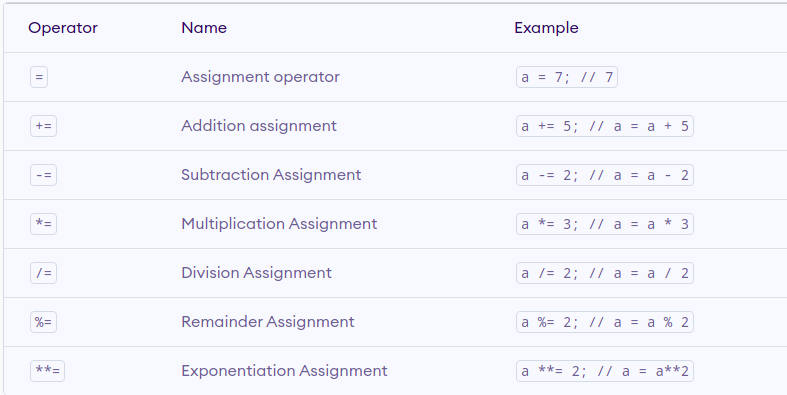
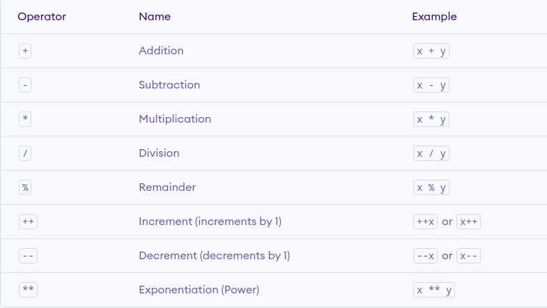
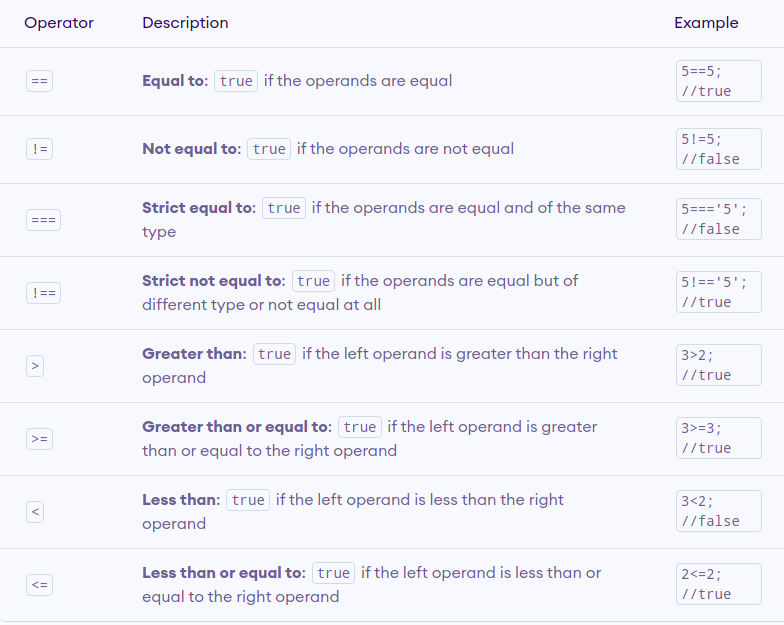
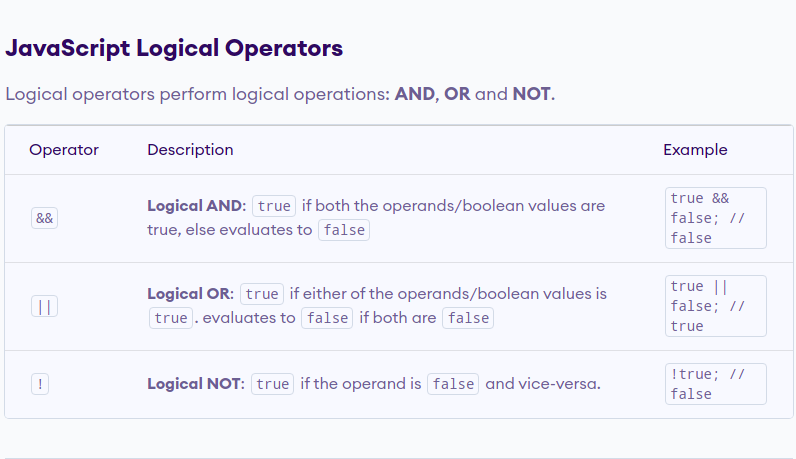
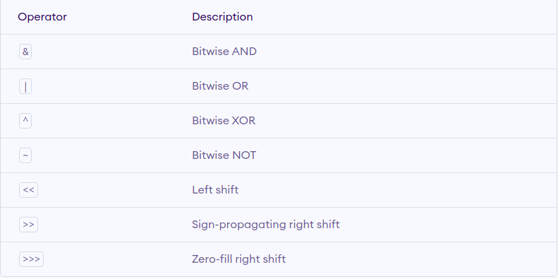
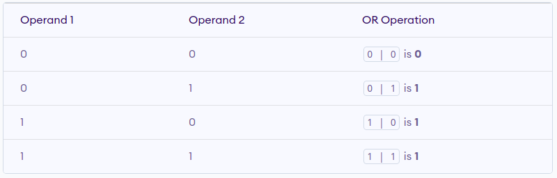
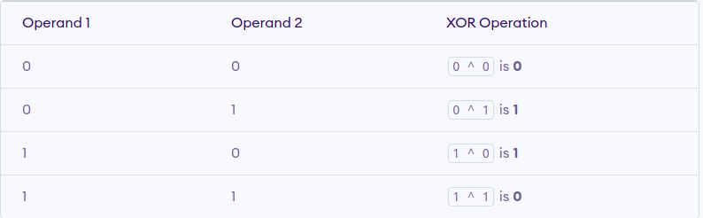
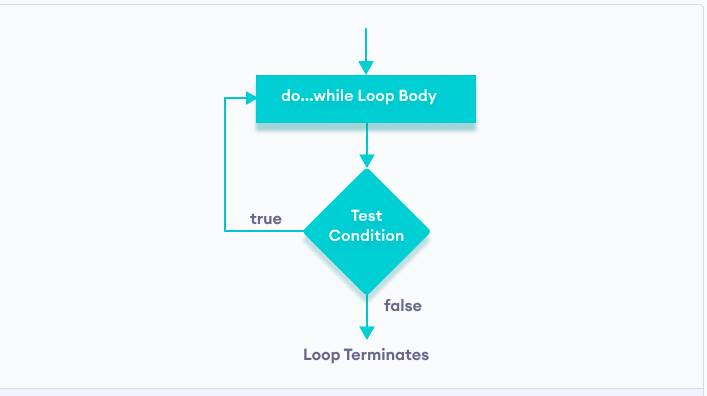

A web browser (commonly referred to as a browser) is application software for accessing the World Wide Web. When a user requests a web page from a particular website, the web browser retrieves the necessary content from a web server and then displays the page on the user's device.
Web browsers are used on a range of devices, including desktops, laptops, tablets, and smartphones. In 2020, an estimated 4.9 billion people used a browser
The first web browser, called WorldWideWeb, was created in 1990 by Sir Tim Berners-Lee
1993 was a landmark year with the release of Mosaic, credited as "the world's first popular browser"
Netscape Navigator released in 1994. Navigator quickly became the most popular browser.
Microsoft released Internet Explorer in 1995, leading to a browser war with Netscape.Internet Explorer peaked at over 95% in 2002
Firefox browser, first released by Mozilla in 2004. Firefox reached a 28% market share in 2011
Apple released its Safari browser in 2003
Google debuted its Chrome browser in 2008, which steadily took market share from Internet Explorer and became the most popular browser in 2012
Microsoft released its Edge browser in 2015 as part of the Windows 10 release.
The purpose of a web browser is to fetch content from the Web and display it on a user's device.
Once a web page has been retrieved, the browser rendering engine displays it on the user's device. This includes image and video formats supported by the browser.
Most browsers use an internal cache of web page resources to improve loading times for subsequent visits to the same page.
The cache can store many items, such as large images, so they do not need to be downloaded from the server again
They allow users to set bookmarks and browse in a private mode. They also can be customized with extensions, and some of them provide a sync service
users can change their home page and default search engine. They also can change default web page colors and fonts.
Assignment operators are used to assign values to variables

// Increment
let a = 1;
console.log(a++); // 1
console.log(a); // 2
// Decrement
let b = 1;
console.log(b--); // 1
console.log(b); // 0
Arithmetic operators are used to perform arithmetic calculations
Comparison operators compare two values and return a boolean value, either true or false
JavaScript Comparison Operators
const a = 5, b = 2, c = 'hello'; // equal to operator
console.log(a == 5); // true
console.log(b == '2'); // true
console.log(c == 'Hello'); // false
const a = 3, b = 'hello'; // not equal operator
console.log(a != 2); // true
console.log(b != 'Hello'); // true
const a = 2; // strict equal operator
console.log(a === 2); // true
console.log(a === '2'); // false
Logical operators perform logical operations: AND, OR and NOT.
JavaScript Logical Operators
const a = true, b = false; // logical AND
const c = 4;
console.log(a && a); // true
console.log(a && b); // false
console.log((c > 2) && (c < 2)); // false
const a = true, b = false, c = 4; // logical OR
console.log(a || b); // true
console.log(b || b); // false
console.log(( c > 2 ) || ( c < 2 )); // true
const a = true, b = false; // logical NOT
console.log(!a); // false
console.log(!b); // true
Bitwise operators perform operations on binary representations of numbers.
bitwise AND operation of two integers 12 and 25.
In binary, | // bitwise AND operator example
12 = 01100 | let a = 12
25 = 11001 | let b = 25
// Bitwise AND Operation of 12 and 25 | console.log(a & b); // 8
00001100 |
& 00011001
---------
00001000 = 8 (In decimal)
Bitwise OR | returns 1 if either of the corresponding bits of one operand is 1 else returns 0.
bitwise OR operation of two integers 12 and 25.
In binary, | // bitwise OR operator example
12 = 01100 | let a = 12
25 = 11001 | let b = 25
// Bitwise OR Operation of 12 and 25 | console.log(a | b); // 29
00001100 |
& 00011001
---------
00011101 = 29 (In decimal)
Bitwise XOR ^ returns 1 if the corresponding bits are different and returns 0 if the corresponding bits are the same

n binary,
12 = 01100
25 = 11001
// Bitwise XOR Operation of 12 and 25
00001100
^ 00011001
--------
00010101 = 21 (In decimal)
console.log(12 ^ 25); // 21
Bitwise NOT ~ inverts the bit( 0 becomes 1, 1 becomes 0).
In binary,
12 = 00000000000000000000000000001100
// Bitwise Not Operation of 12
~ 00000000000000000000000000001100
---------------------------------
11111111111111111111111111110011 = -13(In decimal)
console.log(~12); // -13
let a = 8;
let b = 1;
result = a << b; // Left shift
// 1 ( 00000000000000000000000000010000 )
console.log(result);
let a = 8;
let b = 1;
result = a >> b;
// 4 (00000000000000000000000000000100)
console.log(result);
let a = 8, b = 1;
console.log(a >>> b); // 4 // 0100
In JavaScript, you can also use the + operator to concatenate (join) two or more strings.
// concatenation operator
console.log('hello' + 'world');
let a = 'JavaScript';
a += ' tutorial'; // a = a + ' tutorial';
console.log(a);
JavaScript comments are hints that a programmer can add to make their code easier to read and understand. They are completely ignored by JavaScript engines. There are two ways to add comments to code:
name = "Jack";
console.log("Hello " + name); // printing name on the console
Math properties
// numeric string used with + gives string type
let result;
result = '3' + 2; // "32"
result = '3' + true; // "3true"
result = '3' + undefined; // "3undefined"
result = '3' + null; // "3null"
result = '4' - '2'; // 2
result = '4' - 2; // 2
result = '4' * 2; // 8
result = '4' / 2; // 2
result = 'hello' - 'world'; // NaN
result = '4' - 'hello'; // NaN
result = Number('324'); // 324
result = Number('324e-1'); // 32.4
result = Number(true); // 1
result = Number(false); // 0
result = Number(null); // 0
result = Number('hello'); // NaN
result = Number(NaN); // NaN
result = parseInt('20.01'); // 20
result = parseFloat('20.01'); // 20.01
result = +'20.01'; // 20.01
result = String(324); // "324"
result = String(2 + 4); // "6"
result = String(null); // "null"
result = String(undefined); // "undefined"
result = String(NaN); // "NaN"
result = String(true); // "true"
result = String(false); // "false"
result = (324).toString(); // "324"
result = true.toString(); "true"
let result;
result = Boolean(''); // false
result = Boolean(0); // false
result = Boolean(undefined); // false
result = Boolean(null); // false
result = Boolean(NaN); // false
// All other values give true
result = Boolean(324); // true
result = Boolean('hello'); // true
result = Boolean(' '); // true
In JavaScript, there are three forms of the if...else statement.
if (condition) {
// block of code if condition is true
} else {
// block of code if condition is false
}
if (condition1) {
// code block 1
} else if (condition2){
// code block 2
} else {
// code block 3
}
In programming, loops are used to repeat a block of code.
for(initialExpression; condition; updateExpression) { // for loop body }
// program to display the sum of natural numbers
let sum = 0;
const n = 100
// looping from i = 1 to n
// in each iteration, i is increased by 1
for (let i = 1; i <= n; i++) {
sum += i; // sum = sum + i
}
console.log('sum:', sum); // 5050
let sum = 0;
// take input from the user
let number = parseInt(prompt('Enter a number: '));
while(number >= 0) {
// add all positive numbers
sum += number;
// take input again if the number is positive
number = parseInt(prompt('Enter a number: '));
}
console.log(`The sum is ${sum}.`);
JavaScript do...while Loop

let sum = 0, number = 0
do {
sum += number;
number = parseInt(prompt('Enter a number: '));
} while(number >= 0)
let i, j;
loop1:
for (i = 0; i < 3; i++) { //The first for statement is labeled "loop1"
loop2:
for (j = 0; j < 3; j++) { //The second for statement is labeled "loop2"
if (i === 1 && j === 1) {
break loop1;
}
console.log('i = ' + i + ', j = ' + j);
}
}
for (let i = 1; i <= 5; i++) {
if (i == 3) {
continue;
}
console.log(i);
}
let j = 1;
while(j <= 5) {
if (j == 3)
continue;
console.log(j);
j++;
}
switch statement evaluates an expression and executes the corresponding body that matches the expression's result.
switch(variable/expression) {
case value1:
// body of case 1
break;
case value2:
// body of case 2
break;
default:
// body of default
}
switch statement evaluates a variable/expression inside parentheses ().
JavaScript Switch Statement
switch (1) {
case "1": a = 1;break;
case 1: a = 'one';break;
default: a = 'not found';break;
}
console.log(a); // 'one'